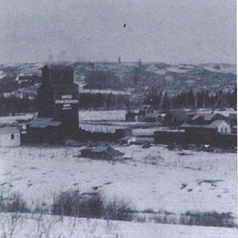
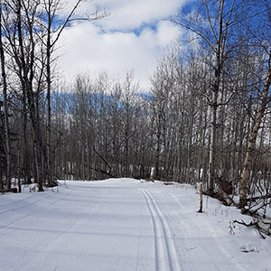

Explore Tawatinaw Valley



The people that lived here
Though there is no definite date Tawatinaw was founded, it is presumed to be around 1876 when the Hudson’s Bay Company built the Athabasca Landing Trail. The town area was originally called Stony Creek siding 5 and was later renamed by the new settlers to Tawatinaw, meaning “river which divides the hills” in Cree. The Tawatinaw area became such a popular place that in 1918 it had a population of 677 people. The boom town had many businesses such as a pool hall, restaurants, an egg grading station, grain elevators, a water tower, telephone service, stockyards, and machine agencies it had the works.
The town thrived due to how connected the community was, as Susan E. Cooper recalls from her mother's journal. She remembers having lunch at the school with all the children, not a single one left out. When her father would help one neighbour build their house, assist another one with work, and do chores for a third who was ill. Payment wasn’t expected, they were neighbours.